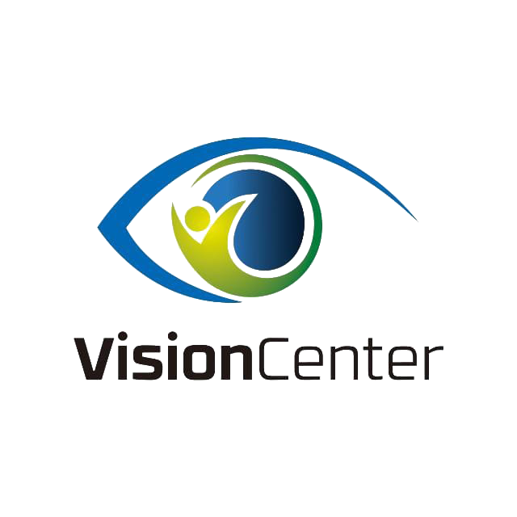

Vision Center
Beranda
PPPK Kemensos & Dinas Sosial
Materi
Latihan Soal
Try Out
Tentang
Masuk
25. SDGs-Dokumen-Hasil-Tujuan-Pembangunan-Berkelanjutan
26. Kode_Etik_IPSPI_2011
27. Kode Etik NASW
28. KODE ETIK NATIONAL ASSOCIATION OF SOCIAL WORKERS
29. KODE ETIK PEKERJA SOSIAL
30. UU PERLINDUNGAN ANAK
31. Deskripsi Praktik Peksos Makro
32. Dilema Etik
33. KODE ETIK NASW
34. Met & Strategi Macro Practice
36. Pengantar Pekerjaan Sosial Makro
37. PERANAN2 DLM INTERVENSI MAKRO
38. TUJUAN DAN FOKUS MHSO_PERT2s
39. STRUKTUR & BUDAYA ORGANISASI
40. Prinsip-prinsip dasar peksos
41. Presentasi case work